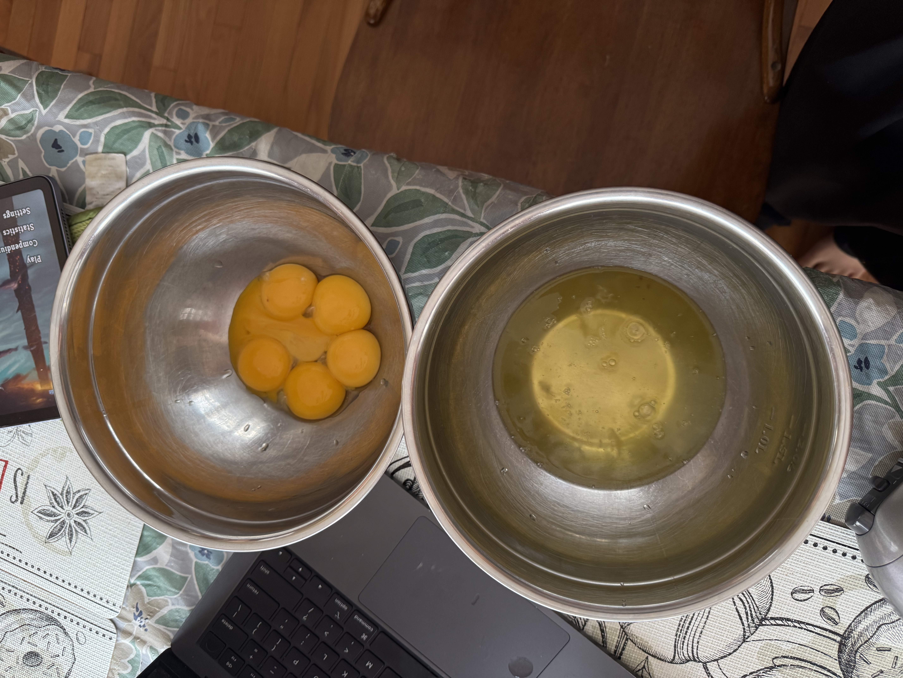
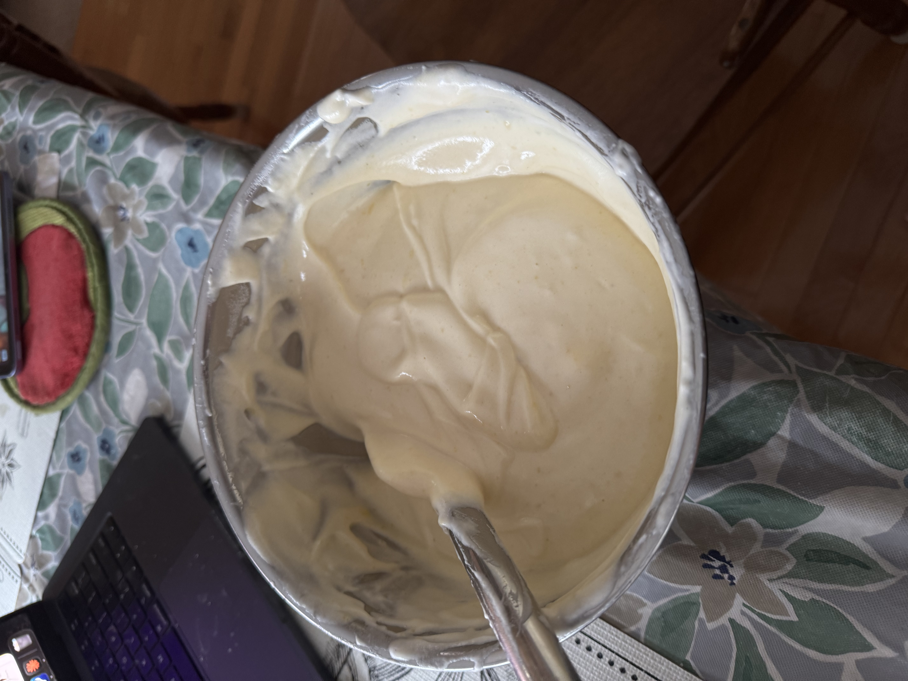
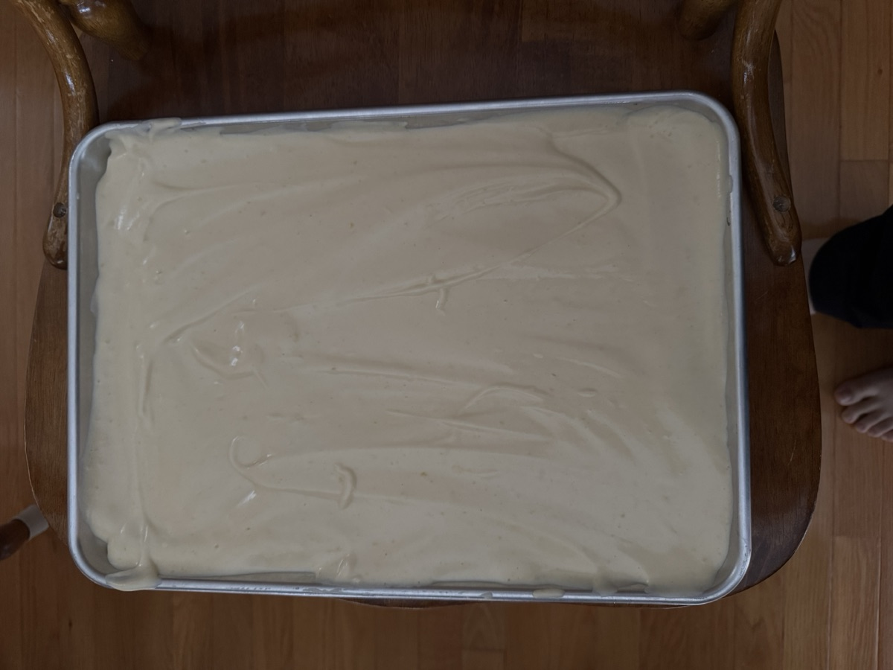
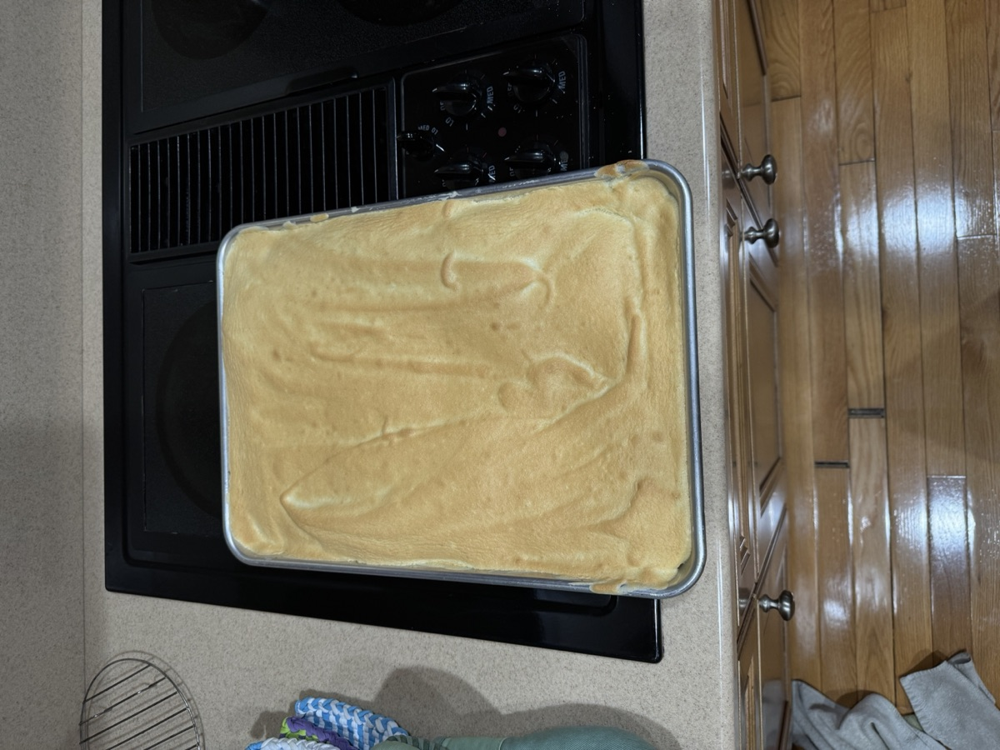
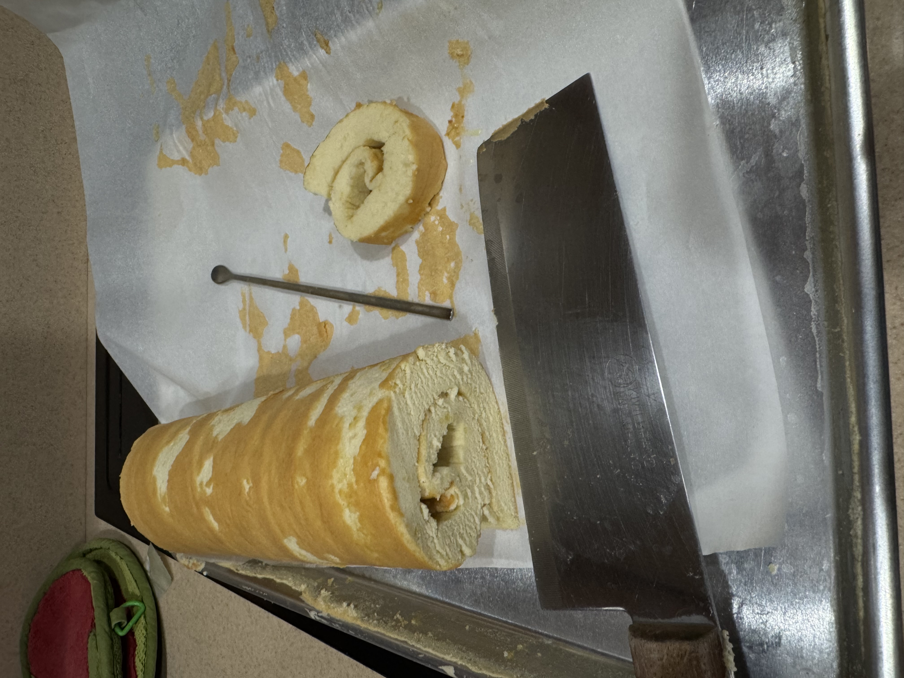

Light chiffon cake rolled with whipped cream and savory-sweet pork floss. Adapted from Teak & Thyme’s Coffee Swiss Roll.
Click any measured ingredient to switch just that row between US and metric.




